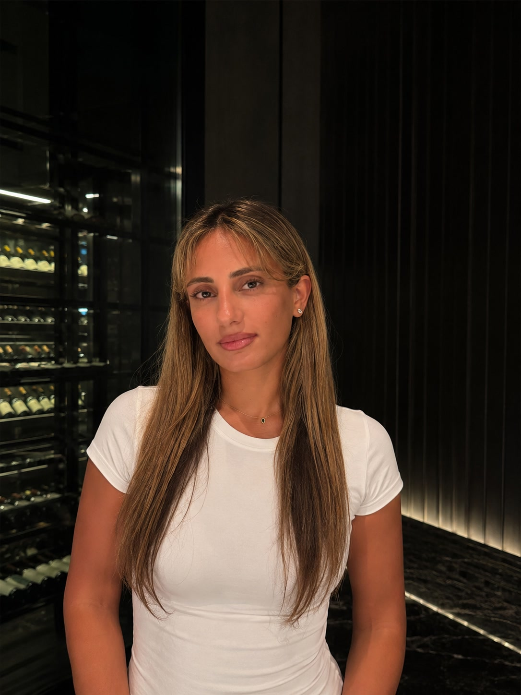

אוטומציה
ייעול משימות ותהליכים חוזרים כך שיתבצעו אוטומטית, וחיסכון בשעות עבודה כל שבוע.
Reut AI עוזרת לעסקים לזהות איפה תהליכים מתעכבים, שואבים זמן ואנרגיה ובונה פתרונות טכנולוגיים מעשיים לעסק: אוטומציה לעסקים, סוכני AI, CRM, ומערכות מותאמות אישית.
אנו מתחילים מהצורך של העסק שלכם.
לא מהטכנולוגיה.
אין מעקב מסודר אחרי לקוחות פוטנציאליים, ופניות מתפספסות בדרך.
אותן שאלות, הזנות נתונים ופעולות מתבצעות שוב ושוב ידנית.
מייל, WhatsApp, גיליונות Excel ומערכות שונות — בלי מקור מידע אחד מסודר.
שאלות חוזרות והודעות שוטפות גוזלות זמן שאפשר להשקיע בעבודה שמקדמת את העסק.
פעולות שחוזרות מדי יום או שבוע יכולות להפוך לתהליך אוטומטי שעובד ברקע.
לעסק שלכם יש צרכים תפעוליים ספציפיים שתוכנה גנרית פשוט לא נותנת עליהם מענה.
ממפים איך העסק עובד בפועל — המטרות, האנשים, הלקוחות והתהליכים — ומזהים איפה זמן ואנרגיה מתבזבזים.
מזהים מה באמת מעכב את העסק: לידים שנופלים בין הכיסאות, משימות שחוזרות על עצמן, מידע שמפוזר בין מערכות או תהליך שדורש יותר מדי עבודה ידנית.
לא כל בעיה צריכה AI ולא כל תהליך צריך אוטומציה. בוחרים את הפתרון לפי הצורך העסקי — אוטומציה, סוכן AI, מערכת CRM, פתרון WhatsApp או מערכת מותאמת אישית.
הפתרון נבנה סביב הדרך שבה העסק באמת עובד — במטרה לצמצם עבודה ידנית, לפשט תהליכים וליצור שיטת עבודה יעילה יותר.
בהתאם לאתגר שלכם, אני מעצבת ובונה את הפתרון הטכנולוגי הנכון - תמיד מותאם אישית לעסק שלכם.
ייעול משימות ותהליכים חוזרים כך שיתבצעו אוטומטית, וחיסכון בשעות עבודה כל שבוע.
עוזרים חכמים שמטפלים בשאלות לקוחות, מעבדים נתונים או תומכים בצוות שלכם עם ידע מותאם אישית.
כלי ניהול קשרי לקוחות המותאמים בדיוק לאופן שבו העסק שלכם באמת פועל.
בוטים ותגובות אוטומטיות שמטפלים בשאלות לקוחות חוזרות בפלטפורמות הודעות שונות.
מערכות שמחברות בין הנתונים, הכלים והתהליכים שלכם לזרימת עבודה חלקה ויעילה.
מערכות מותאמות אישית לחלוטין, המתוכננות ונבנות מאפס כדי לפתור את האתגרים התפעוליים הייחודיים שלכם.
הנה כמה דוגמאות לפתרונות שבניתי עבור עסקים כמו שלכם. לכל אחת יש נגיעה - עברו איתה מהבעיה לפתרון.
סוכן AI שלומד את סגנון הכתיבה ועובד עם חומרי המקור ב־Google Drive.
מחודשיםלשבוע
זמן הכתיבה התקצר לכשבוע — תוך שמירה על הקול והסגנון האישי.
מערכת CRM לתיווך עסקים. CRM מותאם אישית שמרכז את העבודה ומבצע התאמות אוטומטיות בין קונים לעסקים למכירה.
מעבודה סביב השעוןלתהליך שעובד בצורה סיסטמטית
פחות עבודה ידנית, יותר סדר ושליטה, ותהליך שיכול להתקדם בלי שבעל העסק יצטרך להיות מעורב בכל פעולה.
בוט WhatsApp אוטומטי שנותן מענה מיידי לשאלות נפוצות ומוריד מהצוות את הטיפול בפניות החוזרות.
משעות של שאלות חוזרותלמענה אוטומטי
פחות זמן על שאלות שחוזרות על עצמן, מענה מהיר וזמין יותר ללקוחות — ויותר זמן לצוות להתמקד במכירות ובצמיחת המחנה.
מערכת גישה מאובטחת לוובינרים. מערכת שמנהלת אוטומטית את ההרשמה והתשלום ומעניקה לכל משתתף גישה אישית ומאובטחת לתוכן הוובינר.
מהרשמה ידניתלגישה אוטומטית לוובינר
תהליך הרשמה וגישה שעובד אוטומטית, פחות התעסקות ידנית בניהול המשתתפים, וחוויית כניסה פשוטה ומסודרת יותר ללקוח.

הרקע שלי משלב טכנולוגיה ומכירות. התחלתי בתפקידים טכניים, עם בסיס במדעי המחשב ואלקטרוניקה, ומאוחר יותר עברתי למכירות — קודם בישראל, ואז בארצות הברית. היום אני משלבת את השניים: הבנה של פיתוח וטכנולוגיה לצד הבנה של איך עסקים ולקוחות באמת מתנהלים — וזה מה שמכוון אותי לבחור את הפתרון שיעבוד, לא את המרשים ביותר.
בוגרת תואר במדעי המחשב, ניסיון בתפקידים טכנולוגיים מעל 3 שנים, ובנייה של מערכות וכלים מותאמים אישית.
עברתי למכירות — תחילה בביטוח בישראל, ולאחר מכן במכירות ישירות בארצות הברית.
השילוב הזה עיצב את האופן שבו אני עובדת היום: הבנה של הטכנולוגיה, של התהליך העסקי ושל האנשים מאחוריו.
"אני מאמינה שטכנולוגיה צריכה לפשט עסק, לא להוסיף לו עוד שכבת מורכבות."
אין מחיר אחיד, כי אוטומציה יכולה להיות תהליך פשוט יחסית או פתרון שמחבר כמה מערכות ותהליכים עסקיים. המחיר תלוי במורכבות התהליך, במספר המערכות והחיבורים ביניהן, בכמות הלוגיקה המותאמת אישית, בשאלה אם נדרש רכיב של AI, ובהיקף הבדיקות וההטמעה. לכן הצעד הראשון הוא תמיד להבין את התהליך ולהחליט מה באמת כדאי להפוך לאוטומטי — ורק אז אפשר לאמוד את הפרויקט.
זה תלוי במה שהסוכן צריך לעשות. סוכן פשוט שעונה על שאלות מתוך מקור ידע מוגדר הוא לא אותו דבר כמו סוכן שמתחבר ל-CRM ולמערכות העסק, מבצע פעולות, מעבד מסמכים או משתתף בתהליך רב־שלבי. לכן אני מאפיינת את הפרויקט לפי היכולות הנדרשות, החיבורים, מקורות המידע ורמת ההתאמה האישית — ומשם נגזר המחיר.
משך ההקמה תלוי במורכבות התהליך. אוטומציה ממוקדת אחת יכולה לעלות לאוויר הרבה יותר מהר ממערכת שמערבת כמה פלטפורמות, חוקים עסקיים, AI ופיתוח מותאם. אני מתחילה ממיפוי התהליך הקיים, מזהה את צוואר הבקבוק, מגדירה את הפתרון, ורק אז בונה ובודקת. לוחות הזמנים המדויקים נקבעים אחרי שלב האפיון, לפי מה שהתברר בו.
לא. מערכת CRM מותאמת נכונה כשהמערכות הקיימות בשוק לא מתאימות לאופן שבו העסק עובד — הן יוצרות עבודה ידנית מיותרת, מחייבות עקיפות, או לא מצליחות לחבר בין המידע והתהליכים הרלוונטיים. אם כבר יש מערכת שנותנת מענה טוב לצורך העסקי, אין סיבה לבנות משהו מותאם רק בשביל לבנות.
אוטומציה היא לא תמיד הפתרון הנכון. לרוב לא כדאי כשהתהליך קורה לעיתים רחוקות מאוד, כשהוא עדיין לא מוגדר בבירור, כשהוא משתנה כל הזמן, כשעלות האוטומציה גבוהה מהבעיה שהיא פותרת, או כששינוי פשוט בתהליך היה פותר את זה ממילא. המטרה היא לא להפוך הכול לאוטומטי — אלא לזהות איפה טכנולוגיה באמת יוצרת ערך עסקי.
ספרו לי מה הדבר שלוקח לכם הכי הרבה זמן לעשות.
מעדיפים וואטסאפ? דברו איתי כאן